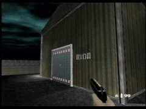
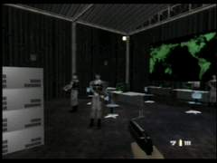
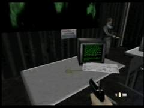

Un Bon Niveau ! Des Objectifs intelligents, des Ennemis chiants, un régal ! Attention toutefois, il est rare de sortir intact de ce Niveau. Visez bien, courez vite, pas chassés, et perdez pas de temps !
Détruire le Depot Illegal d'Armes : 00 Agent
Dès le Début, prenez à droite, et passé la Barricade Grise, continuez tout droit, vous arriverez à une Grille qui s'ouvre. Au fond du chemin, vous pourrez aller à Droite ou à Gauche.


Ensuite, voilà le Menu : Gauche - Hangar des Ordinateurs. Droite - Depot Illegal d'Armes (puis en continuant, Fin du Niveau avec le Train etc). Suivant votre Niveau de Difficulté, suivez votre chemin. Le Depot Illegal est à Droite, allons-y ! C'est le 2eme Entrepot sur la Droite après le Carrefour cité plus haut. Dedans, faites tout peter, mais n'oubliez pas de récuperer les Armes et les Munitions !


Détruire les Ordinateurs + Récuperer la Clé du Coffre : Secret Agent / 00 Agent
Ces 2 Objectifs vont de pair. Revenez au Carrefour (Attention aux Gardes) et continuez vers l'autre Entrepot au fond. Dedans, attention au Drone Gun (le Lance Roquette fera l'affaire) et aux Gardes. Une fois le Lieu sécurisé, détruisez l'Ecran de Controle Principal et les 2 Terminaux. Quand vous avez fini, récuperez la Clé sur la Table et c'est bon ! Maintenant, revenez vers le Depot Illegal, pour vous rendre vers la Fin du Niveau. Une fois en face du Depot Illegal, prenez droit devant, vous arriverez devant le Dernier Batiment.





Récuperer les Plans de l'Helicoptere : Secret Agent / 00 Agent

Une fois dans le Dernier Batiment, montez à l'Etage et vous trouverez le Coffre. Ouvrez, et chopez les Fichiers de l'Helicoptere !


Localiser le Train : Tous Niveaux
En fait, il faut simplement le trouver, puis rentrer dedans. Une fois dans le dernier Batiment, ouvrez la porte à l'Etage, descendez l'escalier, ouvrez le rideau de Fer, et c'est fini ! Attention au Dernier Garde cependant...